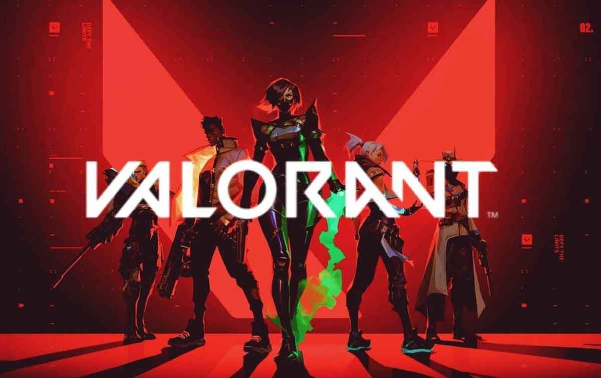
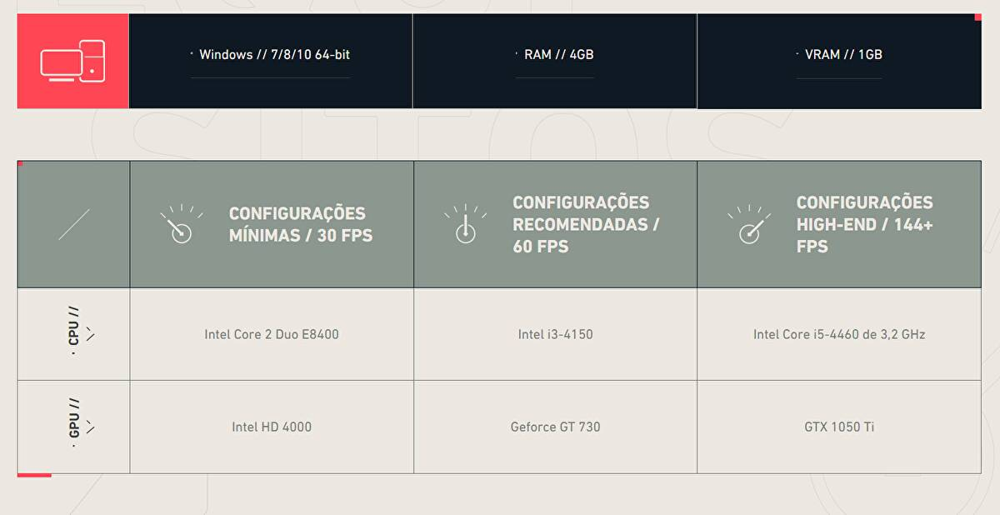

Jogos da atualidade
Os jogos da atualidade são os jogos que são mais jogados atualmente, sendo estes:
Fortnite
Fortnite é um jogo eletrónico multijogador online revelado originalmente em 2011, desenvolvido pela Epic Games e lançado como diferentes modos de jogo que compartilham a mesma jogabilidade e motor gráfico de jogo. Os modos de jogo incluem Fortnite: Save the World, um jogo cooperativo pay-to-play de sobrevivência para até quatro jogadores, que devem lutar contra carcaças (zombies) e defender objetos com fortificações que eles podem construir, e Fortnite Battle Royale, um jogo free-to-play do género battle royale, onde até 100 jogadores lutam em espaços cada vez menores para serem a última pessoa ou equipa vencedora.
Valorant

Valorant é um jogo eletrônico multijogador gratuito para jogar de tiro em primeira pessoa desenvolvido e publicado pela Riot Games. Onde duas equipas de cinco jogadores jogam uma contra a outra, e os jogadores assumem o papel de "agentes" com habilidades únicas.

League of Legends
Conhecido como LOL, o League of Legends é o favorito entre os gamers, é uma verdadeira febre no mundo dos jogos online! O objetivo do jogo é entrar no campo inimigo com os chamados "Campeões" - que possuem poderes distintos - vencer os obstáculos, chegar ao Nexus (o coração da base de cada equipa ou competidor) e destruí-lo. O League of Legends conta com competições internacionais enormes, reunindo fãs de todo o mundo.